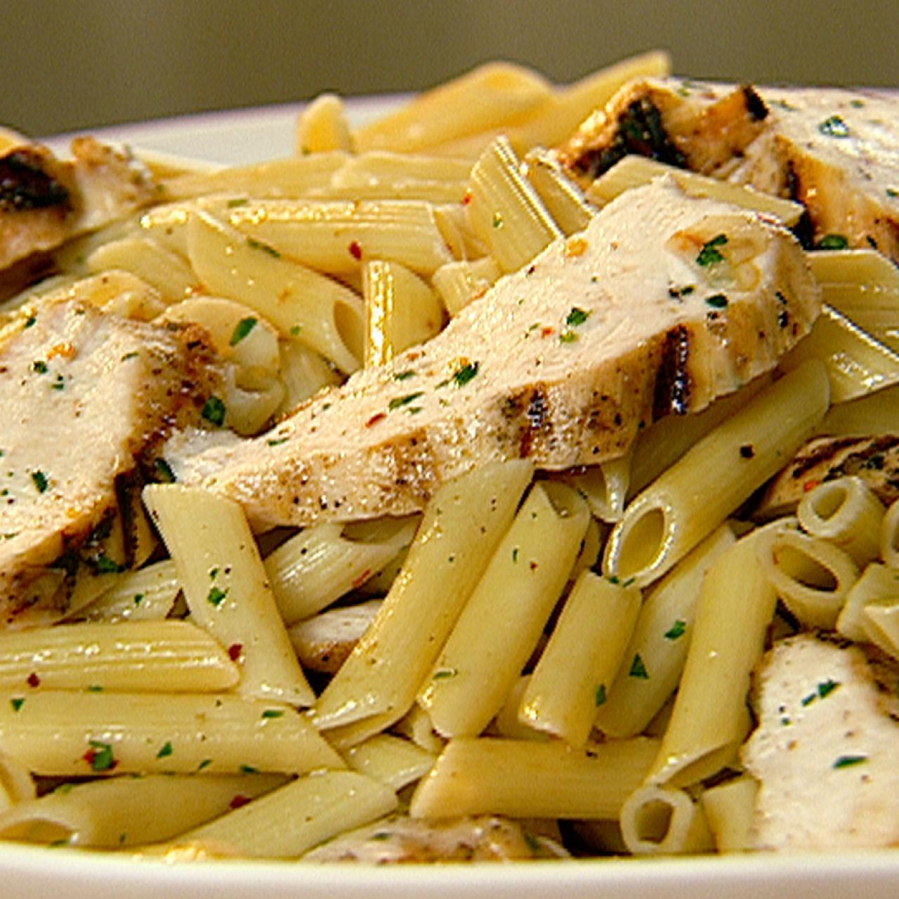

Lemon Penne with Chicken
Description
An easy olive oil-based pasta dish, topped with grilled chicken, parmesan cheese, and full of spices such as red pepper flakes
Tip: Add cajun seasoning for an extra kick!
Ingredients
- 1 pound dried penne
- 2 chicken cutlets, chopped or sliced
- Salt and Black Pepper
- 3 cloves of garlic, sliced
- 1/4 tsp Red Pepper Flakes
- 3 tbsp Olive Oil
- 3 tbsp Fresh Parsley
- 2 Lemons, juiced
- 1/2 cup Grated Parmesan
Steps
- Cook the pasta in a large pot of boiling salted water, until al dente. Drain well.
- Season chicken with salt and pepper. Heat a large grill pan over medium high and add chicken. Grill until golden and completely cooked. Remove to a plate and slice.
- Add the garlic and red pepper flakes to a saute pan with 3 tablespoons of olive oil and saute until fragrant. Add the cooked pasta and turn heat off. Mix all together.
- Remove pasta to a large bowl. Add chicken to the warm pasta and season with salt and pepper. Sprinkle in chopped parsley. Add the juice of 2 lemons and mix. Before serving top with Parmesan.